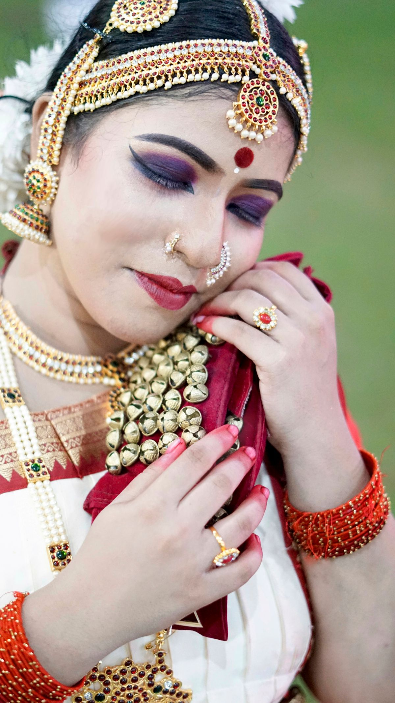

About · EPK for presenters
Fourteen years under one guru.
Ananya Nair began Bharatanatyam at seven in Kochi, in a class held in a school hall with the windows open to the rain. At eighteen she moved to Chennai to train full-time, and she has had exactly one guru since — fourteen years in the Kalakshetra bani, where the geometry is strict, the abhinaya is unhurried, and nothing is decorated that has not first been made correct.
Her arangetram — the debut full-length recital — was danced in Chennai in 2016. Since then she has performed over two hundred recitals: December-season sabhas, temple festivals, university halls, one corporate lawn, and a good number of school auditoriums with a ceiling fan where the follow spot should be. The work does not change with the room. The margam is the margam.
She also teaches a small cohort of senior students in Chennai and prepares two or three arangetrams a year — which is why April is a teaching month and takes no solo bookings. Choreography commissions are taken one at a time, and only when the music is already worth dancing to.
Bios, ready to print
Copy either bio as it stands — no permission needed, no edits requested beyond shortening the long one at a natural break.
Ananya Nair is a Bharatanatyam dancer based in Chennai, trained for fourteen years in the Kalakshetra tradition under a single guru. Her full margam is known for unhurried abhinaya and exact, audible footwork. She has danced over two hundred recitals across India, tours a lecture-demonstration for first-time audiences, and teaches a small cohort of senior students in Chennai each season.
Ananya Nair is a Bharatanatyam dancer based in Chennai, trained for fourteen years in the Kalakshetra tradition under a single guru. Her full margam is known for unhurried abhinaya and exact, audible footwork. She has danced over two hundred recitals across India, tours a lecture-demonstration for first-time audiences, and teaches a small cohort of senior students in Chennai each season.
Born in Kochi and trained in Chennai, she is a disciple in the guru–shishya line — a way of learning in which a repertoire is not collected but inherited, item by item, over years. Her centrepiece is the Todi varnam, thirty-two minutes of interleaved rhythm and story. Presenters book her for the complete margam, for a 45-minute lecture-demonstration that teaches first-time audiences how the form works, and for masterclasses with advanced students. She prepares a small number of arangetrams each year and takes one choreography commission at a time.
Technical rider
This page is the rider — print it for your stage manager. Everything here exists because its absence has, at some point, cost an evening.
- StageMinimum 9 m wide × 7 m deep, clear of furniture and cables. The orchestra sits stage right on a carpet or low platform of about 3 × 2 m.
- FloorHard, level and splinter-free: wood, laminate, or a marley/dance surface over concrete. No carpet, no polished marble or tile, no bare outdoor ground. The floor is swept and mopped, then left to dry fully, on the day of the performance — the dance is barefoot.
- SoundRecorded programmes: one playback point at the side of the stage, run by the dancer's own operator, with a monitor the dancer can hear. Live orchestra: three microphones — vocal, nattuvangam, mridangam — and foldback for the musicians.
- LightingA warm front wash that reaches the face — abhinaya is facial storytelling and dies under a backlight. One centre special if the rig allows. No strobe and no colour changes during an item.
- Get-inThree hours before the performance, including a 45-minute spacing rehearsal on the actual floor in costume jewellery (not the costume). If the floor fails the barefoot check at get-in, the safety clause in the booking terms applies.
- Green roomA lockable room near the stage with a mirror, drinking water, and a chair low enough to strap ghungroo sitting down. Costume changes happen between items only at the interval.
- Lamp & flameA brass lamp is traditionally lit at the side of the stage before the first item. Real flame is used only in a deep metal tray, at least two metres from the dancer's path, and only with the venue's written permission. Where a venue prefers — schools, marquees, anywhere with a strict fire policy — an LED lamp is used instead, without argument. No other flame, incense or camphor on stage.
- RecordingPresenters may photograph freely. Video recording of full items is by prior written agreement; short clips for the presenter's own publicity are always welcome.
Season diary & booking terms
| Date | Programme | City | Status |
|---|---|---|---|
| 19 Dec 2026 | Full margam · live orchestra | Chennai | Booking open |
| 09 Jan 2027 | Lecture-demonstration · 45 min | Bengaluru | Booked |
| 06 Feb 2027 | Excerpt programme · 39 min | Hyderabad | Booked |
| 14 Mar 2027 | New choreography · premiere | Kochi | In rehearsal |
| Apr 2027 | Teaching season · arangetram preparation | Chennai | No solo bookings |
The terms, in plain words
A date is held for fourteen days on a written enquiry and confirmed when the 50% advance lands. The balance is due seven days before the performance. Travel and stay outside Chennai are charged at cost, agreed in writing before the advance — there are no surprise lines afterwards, on either side.
Cancellation by the presenter: full refund of the advance to 60 days out, half to 30 days; inside 30 days the advance is retained and one new date within the season is offered. Cancellation by the dancer: every rupee paid is refunded, and the presenter hears it first, not last.
Safety before sentiment
Bharatanatyam is barefoot. If the stage floor cannot be made safe — splinters, grit, a skating-rink polish, standing water outdoors — the performance moves onto a hired dance surface quoted on the fee card, or the date is rebooked. Neither side pays a penalty for a floor.
The same plainness applies to flame: the stage lamp is LED wherever a venue's fire policy prefers it. Tradition survives the substitution; ankles do not survive the alternative.